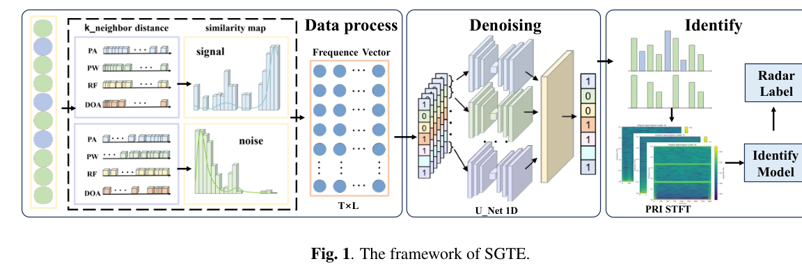
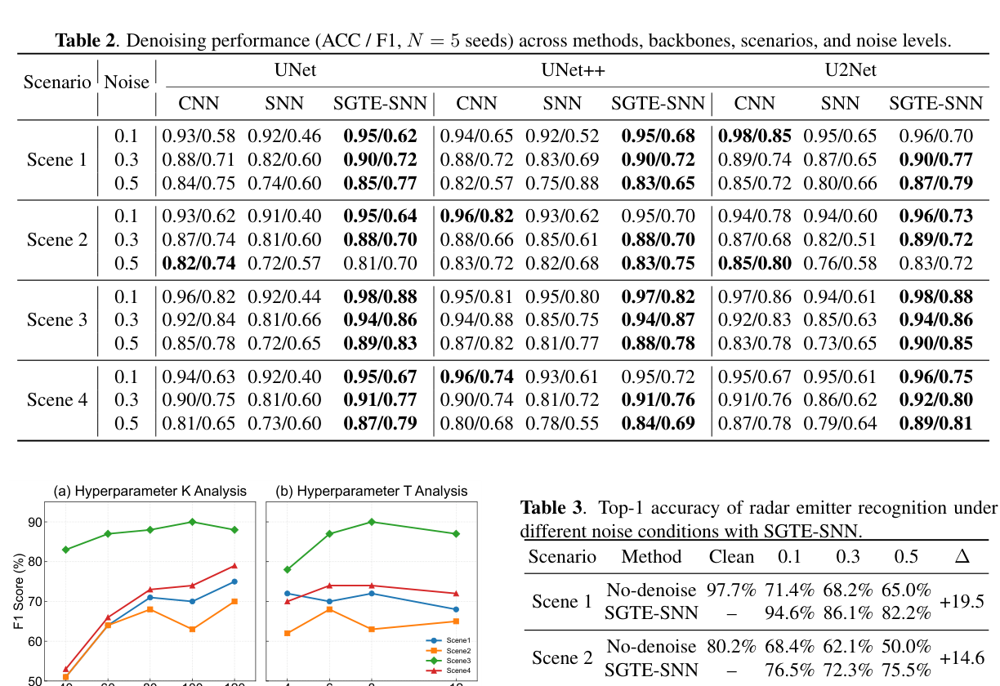
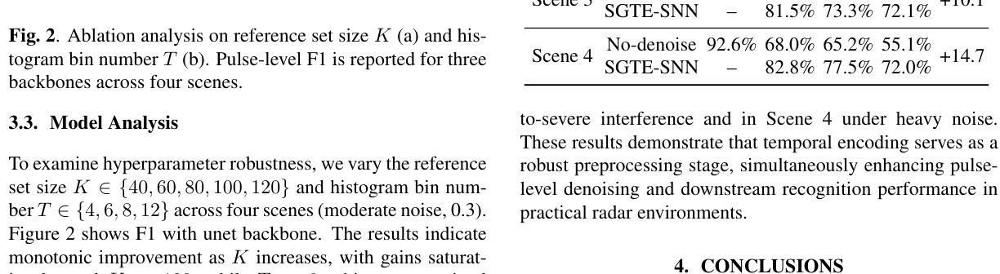

Paper brief
SGTE-SNN: Similarity-Guided Temporal Encoding for Radar Emitter Denoising and Recognition
ICASSP 2026 - 2026 IEEE International Conference on Acoustics, Speech and Signal Processing (ICASSP) · 20337-20341
SGTE converts pulse-to-reference similarities into structured temporal spike inputs for joint radar pulse denoising and emitter recognition.
Research question
In dense multi-source radar environments, PDW sequences are corrupted by noise and interference. Single-pulse features overlap in time-frequency domains, making threshold or rule-based methods fragile under real-time and edge constraints.
Method
SGTE discretizes pulse-to-reference similarities into histogram representations and generates spike trains through probabilistic coding or learnable embeddings. Theoretical analysis connects distributional separability to effective SNN discrimination.
Technical route
- PDW sequence
Receive noisy pulse descriptor words from complex radar scenes.
- Similarity histogram
Compare pulses with references and build distributional representations.
- Temporal encoding
Generate structured spike trains via probabilistic coding or learned embeddings.
- SNN inference
Perform denoising and emitter recognition with event-driven efficiency.
Evidence
- Task
- Denoising + recognition
One encoding framework supports two radar processing stages.
- Theory
- Bayes separability
Distributional distance explains genuine/noise pulse separability.
- Deployment
- Sparse SNN
Designed for low-power event-driven platforms.


SGTE Processing Framework
The figure connects similarity encoding, 1D U-Net denoising and PRI-STFT-based identification into a complete PDW-to-label pipeline.
The central idea is to convert relations between radar pulses and reference samples into structured temporal inputs for noise-robust SNN processing.
Source: ICASSP 2026 - 2026 IEEE International Conference on Acoustics, Speech and Signal Processing (ICASSP), 20337-20341 (2026). © 2026 IEEE.
View full-size figure

Denoising Performance Comparison
The table compares ACC and F1 across denoising methods, backbones, scenarios and noise levels.
The evidence highlights the stability of SGTE-SNN under high-noise and multi-scenario settings.
Source: ICASSP 2026 - 2026 IEEE International Conference on Acoustics, Speech and Signal Processing (ICASSP), 20337-20341 (2026). © 2026 IEEE.
View full-size figure

Ablation and Identification Results
These plots summarize how reference-set size, histogram bins and encoding choices influence identification accuracy.
The ablation clarifies how similarity encoding parameters affect the downstream recognition task.
Source: ICASSP 2026 - 2026 IEEE International Conference on Acoustics, Speech and Signal Processing (ICASSP), 20337-20341 (2026). © 2026 IEEE.
View full-size figureTakeaway & limitations
Similarity distributions capture structural differences between genuine and noisy pulses better than isolated pulse features.
Encoding pulse-to-reference relations as temporal events makes similarity structure available to spiking networks for denoising and recognition.
- Proposes similarity-guided temporal encoding from continuous similarity structure to spike trains.
- Analyzes separability from distributional distance and connects it to discrete spike representations.
- Evaluates denoising and recognition across multi-source radar data and different backbones.
A good entry point for understanding how radar signals can be represented for SNNs: read similarity distributions first, then encoding, then denoising and recognition results.
Citation
Qi Sun, Xiaoning Wang, Zhen Cao, Shiqing Yang, and Biao Hou. SGTE-SNN: Similarity-Guided Temporal Encoding for Radar Emitter Denoising and Recognition. ICASSP 2026 - 2026 IEEE International Conference on Acoustics, Speech and Signal Processing (ICASSP), 2026, 20337-20341.
Download BibTeX